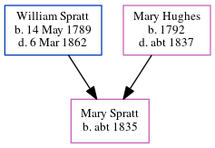

Esther Pointer (née Spratt) 1836 - c1885
[ Home ] | [ Calendar ] | [ Surnames Index ] | [ Errors ] | [ Family History ]The child of William Spratt (a labourer) and Mary Hughes, Esther Spratt, the three times great-aunt of Nigel Horne, was born in St Nicholas-at-Wade, Kent, England in 18361, was baptised there on 18 Dec 1836 and also married George Pointer (a house carpenter with whom she had 8 children: Abigail Jane, Augustus, Annie Elizabeth, Alfred G, Albert William, Arthur Thomas, Adelaide Agnes Esther and Alice Mary, along with 3 surviving children) there on 14 Oct 18581.
During her life, she was living at The Street in St Nicholas-at-Wade on 6 Jun 18414; at John Street, St Peters, Thanet, Kent, England on 7 Apr 18615; and at Station Road, Birchington, Kent on 3 Apr 18816.
She died c. Apr 1885 in Thanet2 and was buried at All Saints Church, Birchington, Kent on 25 Apr 18853.
Parents
- William was born on 14 May 1789
- Mary was born in 1792
Children
- Annie Elizabeth was born c. 1863
- Albert William was born c. Feb 1869
- Arthur Thomas was born on 28 Oct 1871
- Adelaide Agnes Esther was born c. May 1876
- Alice Mary was born on 29 Jan 1879
Citations
- Kent, Canterbury Archdeaconry marriages 1538-1928 - Findmypast
- England & Wales deaths 1837-2007 - Findmypast
- Kent, Canterbury Archdeaconry burials 1538-1988 - Findmypast
- 1841 England, Wales & Scotland Census - Findmypast (was age 4)
- 1861 England, Wales & Scotland Census - Findmypast (was age 24 and the wife of the head of the household)
- 1881 England, Wales & Scotland Census - Findmypast (was age 44 and the wife of the head of the household)
Media
England & Wales marriages 1837-2008 - BMD/M/1858/4/PZ/000441/036
Kent, Canterbury Archdeaconry marriages 1538-1928 - GBPRS/CANT/M/97245529/2
1861 England, Wales & Scotland Census - GBC/1861/0003550008
England & Wales deaths 1837-2007 - BMD/D/1885/2/AZ/000280/372
Kent, Canterbury Archdeaconry burials 1538-1988 - GBPRS/CANT/D/95392601
1841 England, Wales & Scotland Census - GBC/1841/0013960504
1881 England, Wales & Scotland Census Transcription - GBC-1881-0004822323
Kent, Canterbury Archdeaconry Baptisms Transcription - GBPRS-CANT-B-96801244
England Births & Baptisms 1538-1975 - R_884660463
Family Tree
Map
Generated by ged2site. Last updated on Jul 3, 2024
Known Issues
Date of baptism (18 Dec 1836) before date of birth (1836)
Census information missing between Census UK 1841 and Census UK 1861
Census information missing between Census UK 1861 and Census UK 1881